| Animations |
Every picture below is the game's own drawing, made when these pages were built by running Cyberun in SkoolKit's simulator from the tape's snapshot. Nothing is put together from the sprites.
The game played. Most of the animations are the game running: started through the menu as the build's sessions start it, and where a scene needs somewhere else -- the rocket, the sky over the beams, a life with add-ons -- a new life put there by the game's own restart (the restart point written at the end of a death sequence, as the build does), with the add-ons or parts it needs set at the same moment. Each frame is the screen as one pass of the play loop left it, read at play's loop (the CALL at $F46C) or, during the death sequence, at its own loop ($F49E). Keys were held as a player holds them; where more was staged -- an attacker put in front of the ship, the fuel set low, the damage undone -- the animation says so.
A pass is not a frame. The game never waits for the television: interrupts are off and a pass takes as long as its work, two or three television frames. So each frame of a picture is shown for as long as the game took over that pass, counted in T-states in the simulator at 3.5MHz and rounded to the 10 ms a GIF can say; a frame drawn the same as the one before is merged into it. In the flight over the landscape a pass took 146,335 to 279,634 T-states, 210,249 in the middle (60 ms, 17 passes a second). The simulator has none of a real Spectrum's memory contention, so on the machine, where the ULA holds up the processor's reads and writes of the screen, a pass takes somewhat longer; the notes' figure of about 20 passes a second was made by counting television frames in the emulator.
The objects' own animations are the game's routines called on one record, a pass at a time, on a cleared screen: the record set up with the type, frame byte and range the game gives that thing (from the tables each names), then each pass the same steps update_objects takes for an object -- a new sprite pair, the old image set up for rubbing out, and animate_object (animate_object), place, draw and colour (the tail of update_attacker) -- but no steering and no moving, so the thing animates where it stands. Each of those frames is shown for one pass of 210,249 T-states, the middle pass of the flight above.
The animator is one byte, +$13 of the record: bits 0-3 the frame in the type's list (object_graphic_lists), bits 4-5 a count, bits 6-7 the count's reload; +$14 holds the first and last frames. Each call counts down and, when the count reads 1, steps the frame on, from the last back to the first, and reloads -- one frame every one, two or three passes.
Each picture is shown at twice the Spectrum's size. Under each: what was measured in the run, and the frames of the picture with what they show and how long each lasts.
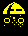
Wave kind 0. The wave table (wave_table) gives it the frame byte $50 and the range $02: frames 0 to 2 of type $1A's list, a new one every pass.
Frame byte $50, range $02: frames 0 to 2 of the list, each held 1 pass; in the run, frames 1 2 0 1 2 0 1 2. Colour $EE.
In the picture: frame 1 (60 ms), frame 2 (60 ms), frame 0 (60 ms), frame 1 (60 ms), frame 2 (60 ms), frame 0 (60 ms), frame 1 (60 ms), frame 2 (60 ms); 8 frames, 0.5 s in all.
Wave kind 2, type $17: frame byte $F0, range $01 -- two frames, three passes each.
Frame byte $F0, range $01: frames 0 to 1 of the list, each held 3 passes; in the run, frames 0 1 0 1 0. Colour $DD.
In the picture: frame 0 (120 ms), frame 1 (180 ms), frame 0 (180 ms), frame 1 (180 ms), frame 0 (120 ms); 5 frames, 0.8 s in all.
Wave kind 3, type $18: frame byte $F0, range $03 -- four frames, three passes each. Its list holds three pictures, the second used twice, so it opens and closes.
Frame byte $F0, range $03: frames 0 to 3 of the list, each held 3 passes; in the run, frames 0 1 2 3 0 1 2 3 0. Colour $CC.
In the picture: frame 0 (120 ms), frame 1 (180 ms), frame 2 (180 ms), frame 3 (180 ms), frame 0 (180 ms), frame 1 (180 ms), frame 2 (180 ms), frame 3 (180 ms), frame 0 (120 ms); 9 frames, 1.5 s in all.
Wave kind 6, type $14 (type14_graphics): four frames, three passes each.
Frame byte $F0, range $03: frames 0 to 3 of the list, each held 3 passes; in the run, frames 0 1 2 3 0 1 2 3 0. Colour $BB.
In the picture: frame 0 (120 ms), frame 1 (180 ms), frame 2 (180 ms), frame 3 (180 ms), frame 0 (180 ms), frame 1 (180 ms), frame 2 (180 ms), frame 3 (180 ms), frame 0 (120 ms); 9 frames, 1.5 s in all.
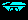
Wave kind 7, type $16: four frames, three passes each, here in colour $FD, the one colour of attacker_colours whose two halves differ -- bright white on one pass and bright cyan on the next (prepare_draw), so it flickers as it turns.
Frame byte $F0, range $03: frames 0 to 3 of the list, each held 3 passes; in the run, frames 0 1 2 3 0 1 2 3 0. Colour $FD.
In the picture: frame 0 x2 (120 ms), frame 1 x3 (180 ms), frame 2 x3 (180 ms), frame 3 x3 (180 ms), frame 0 x3 (180 ms), frame 1 x3 (180 ms), frame 2 x3 (180 ms), frame 3 x3 (180 ms), frame 0 x2 (120 ms); 25 frames, 1.5 s in all.
Wave kind 8, type $1D, the meteor shower's (update_rammer): frame byte $50, frames 0 to 5 of rammer_frames, a new one every pass, so it tumbles.
Frame byte $50, range $05: frames 0 to 5 of the list, each held 1 pass; in the run, frames 1 2 3 4 5 0 1 2 3 4 5 0 .... Colour $FF.
In the picture: frame 1 (60 ms), frame 2 (60 ms), frame 3 (60 ms), frame 4 (60 ms), frame 5 (60 ms), frame 0 (60 ms), frame 1 (60 ms), frame 2 (60 ms), frame 3 (60 ms), frame 4 (60 ms), frame 5 (60 ms), and so on; 13 frames, 0.8 s in all.
Wave kind 9, the same type $1D: frame byte $56 and range $67, frames 6 and 7 of the same list, a new one every pass.
Frame byte $56, range $67: frames 6 to 7 of the list, each held 1 pass; in the run, frames 7 6 7 6 7 6 7 6. Colour $FF.
In the picture: frame 7 (60 ms), frame 6 (60 ms), frame 7 (60 ms), frame 6 (60 ms), frame 7 (60 ms), frame 6 (60 ms), frame 7 (60 ms), frame 6 (60 ms); 8 frames, 0.5 s in all.
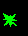
What a shot attacker becomes (check_shot, which sets +$13 to $50 and +$14 to $05): frames 0 to 5 of attacker_frames, a new one every pass. The list repeats two of its pictures, so it bursts, shrinks and bursts again. Coloured here with the pillar's colour, which a shot attacker keeps.
Frame byte $50, range $05: frames 0 to 5 of the list, each held 1 pass; in the run, frames 1 2 3 4 5 0 1 2 3 4 5 0 .... Colour $CC.
In the picture: frame 1 (60 ms), frame 2 (60 ms), frame 3 (60 ms), frame 4 (60 ms), frame 5 (60 ms), frame 0 (60 ms), frame 1 (60 ms), frame 2 (60 ms), frame 3 (60 ms), frame 4 (60 ms), frame 5 (60 ms), and so on; 13 frames, 0.8 s in all.
Type $1C, shot kind 1, what the spiky mounds throw: the template at shot_kind_templates gives frame byte $50 and range $02, frames 0 to 2 of small_thing_frames, a new one every pass; its colour, bright yellow, is the low nibble of the kind's byte in shot_kind_flags, used for both halves. The other kinds of shot have a range of one frame and do not animate.
Frame byte $50, range $02: frames 0 to 2 of the list, each held 1 pass; in the run, frames 1 2 0 1 2 0 1 2. Colour $EE.
In the picture: frame 1 (60 ms), frame 2 (60 ms), frame 0 (60 ms), frame 1 (60 ms), frame 2 (60 ms), frame 0 (60 ms), frame 1 (60 ms), frame 2 (60 ms); 8 frames, 0.5 s in all.
A ground object of kind 4. Its byte in object_kind_flags has bit 4 set, so spawn_objects_from_list makes it graphic $1B with the frame byte and range from object_part_pairs (offset 0: $50, $01) and +$15 bit 7 set, and update_ground_objects animates it: frames 0 and 1 of type1b_graphics, a new one every pass, in its kind's colours from object_kind_bytes ($CD, bright green and bright cyan on alternate passes).
Frame byte $50, range $01: frames 0 to 1 of the list, each held 1 pass; in the run, frames 1 0 1 0 1 0 1 0. Colour $CD.
In the picture: frame 1 (60 ms), frame 0 (60 ms), frame 1 (60 ms), frame 0 (60 ms), frame 1 (60 ms), frame 0 (60 ms), frame 1 (60 ms), frame 0 (60 ms); 8 frames, 0.5 s in all.
Ground kind 5 (and kind $0C, in other colours): offset 2 of object_part_pairs, frames 2 and 3 of graphic $1B, every pass; colours $DF.
Frame byte $52, range $23: frames 2 to 3 of the list, each held 1 pass; in the run, frames 3 2 3 2 3 2 3 2. Colour $DF.
In the picture: frame 3 (60 ms), frame 2 (60 ms), frame 3 (60 ms), frame 2 (60 ms), frame 3 (60 ms), frame 2 (60 ms), frame 3 (60 ms), frame 2 (60 ms); 8 frames, 0.5 s in all.
Ground kind $0E, the refuel pad: offset 4 of object_part_pairs, frames 4 and 5, every pass -- the two frames ship_hits_ground_objects looks for when the ship lands on it; colours $EE.
Frame byte $54, range $45: frames 4 to 5 of the list, each held 1 pass; in the run, frames 5 4 5 4 5 4 5 4. Colour $EE.
In the picture: frame 5 (60 ms), frame 4 (60 ms), frame 5 (60 ms), frame 4 (60 ms), frame 5 (60 ms), frame 4 (60 ms), frame 5 (60 ms), frame 4 (60 ms); 8 frames, 0.5 s in all.
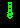
An object marked exploding (+$17 bit 3: hit by the special beam, run out of life, touched the landscape, or caught by the ship's death) is not freed at once. prepare_draw counts a step in bits 0-2 of +$17 each pass and hands it to the compositor, which ANDs the new image's rows with that step's mask from dissolve_mask_bits -- seven bits, then six, down to one -- rotated a bit per byte so the gaps do not line up (dissolve_sprite); at the eighth step the record is freed and only the rubbing out is left. The object goes on animating while it crumbles. Here the pillar, marked exploding from its first pass.
Measured: steps 1 2 3 4 5 6 7 drawn, one a pass, and the record freed on the pass after the seventh.
In the picture: dissolve step 1 (60 ms), dissolve step 2 (60 ms), dissolve step 3 (60 ms), dissolve step 4 (60 ms), dissolve step 5 (60 ms), dissolve step 6 (60 ms), dissolve step 7 (60 ms), freed (120 ms); 8 frames, 0.5 s in all.
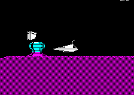
Nothing is scrolled in memory: each pass scroll_landscape redraws the landscape of the four map cells the view straddles straight onto the screen (draw_landscape), from pieces pre-shifted by 0, 2, 4 and 6 pixels, and paints only the strips a moving edge uncovers -- black sky and the ground's checker look the same after a 2-pixel move, which is why every step is 2 pixels (or 4). The ship never moves on the screen; its speed is the scroll. Here the first life, flown left from where a game starts, towards the hillside, thrust held five passes in nine; the whole play area, from the fifth pass.
Measured over 36 passes, 2.1 s: steps across of 6 of 0, 30 of 2 pixels; steps up or down of 8 of 0, 27 of 2, 1 of 4. The passes took 146,335 to 279,634 T-states.
In the picture: 2 px x8 (420 ms), 0 px x2 (110 ms), 2 px x18 (1080 ms), 0 px x2 (120 ms), 2 px (70 ms), 0 px (60 ms), 2 px x2 (140 ms), 0 px (60 ms), 2 px (80 ms); 36 frames, 2.1 s in all.
The thin line rising from the back of the ship (draw_trail) bends with the speed across: its frame is 1 + twice the whole pixels + the half, from the six pictures of trail_images, mirrored with the way the ship faces. It is rubbed out and drawn again only when its frame changes, the ship turns, or the collision code asks. Here the first life, standing where a game starts: right held for 20 passes, then nothing for 30 while the drag slows the ship.
Measured over 50 passes, 1.9 s: the trail's frame went 1 for 1 pass, 2 for 2 passes, 3 for 38 passes, 2 for 9 passes; the whole part of the speed across reached 2.
In the picture: facing right, trail 1 (20 ms), facing right, trail 2 x2 (60 ms), facing right, trail 3 x38 (1490 ms), facing right, trail 2 x7 (280 ms); 48 frames, 1.9 s in all.
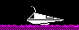
The ship's picture is drawn over itself each odd pass and rubbed out only when it changes (draw_ship): a turn is the steering against the facing, and then the old picture's rows are rubbed out and the new one's drawn in turn, mirrored through the bit-reversal table (draw_ship_image). The facing turns at once; the speed comes round slowly, and the trail with it. Here right held for 20 passes and then left for 24; the picture starts at the twelfth.
Measured: left was first read in pass 9 of the picture, and the ship faced left at the end of pass 9; the speed across had come round to zero or the other way by pass 15, 6 passes after the turn began. 32 passes, 1.4 s in all.
In the picture: facing right, trail 3 x8 (310 ms), facing left, trail 3 x3 (120 ms), facing left, trail 2 x2 (90 ms), facing left, trail 1 x2 (170 ms), facing left, trail 2 x2 (90 ms), facing left, trail 3 x13 (600 ms); 30 frames, 1.4 s in all.
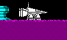
With add-on 5 the lift jet (lift_jet) hangs under the ship on even passes: graphic $11 while thrusting, $12 otherwise, mirrored on every other draw so that it seems to spin, and left out for a pass when the ground is close below. With add-on 4 the side jet (side_jet) flickers behind the ship on odd passes while it steers, its graphic through the eight steps of side_jet_frames ($0E, $0F, $10 in a jumbled order) and its colour through jet_colours. Here a life started where a game starts, with add-ons 4 and 5 fitted by the restart: thrust for 14 passes, nothing for 6, right for 14 and left for 14.
Measured over 48 passes, 2.4 s: the lift jet was on the screen after 26 passes (graphics $11, $12), its mirroring changing 12 times; the side jet after 28, graphics $0F $0F $10 $10 $0F $0F $0E $0E $10 $10 $0F $0F ....
In the picture: no jet x10 (440 ms), lift jet $11 mirrored x2 (100 ms), lift jet $11 x2 (110 ms), lift jet $12 mirrored x2 (120 ms), lift jet $12 x2 (100 ms), lift jet $12 mirrored (50 ms), lift jet $12 mirrored, side jet $0F (50 ms), lift jet $12, side jet $0F (40 ms), lift jet $12, side jet $10 (50 ms), lift jet $12 mirrored, side jet $10 (50 ms), lift jet $12 mirrored, side jet $0F (50 ms), and so on; 47 frames, 2.4 s in all.
fire starts it ahead of the ship's nose; update_shot grows it a cell a pass, its head 16 pixels and its tail 8, drawing it with OR from an 8-byte pattern (laser_pattern_right) read from a moving offset, so the head stays solid and the tail ragged, and rubbing it out by ANDing exactly what was drawn (draw_shot). A probe running ahead tests the landscape; when it hits, or the head reaches the edge, the head stops and the tail catches up. Here the first life, standing where a game starts, fire pressed for one pass.
Measured: the beam was 6 cells long at most, reached on pass 7, a cell a pass; it was gone 6 passes after it was last that long. 15 passes, 0.5 s from the press.
In the picture: 0 cells, growing (30 ms), 1 cell, growing (30 ms), 2 cells, growing (30 ms), 3 cells, growing (30 ms), 4 cells, growing (30 ms), 5 cells, growing (30 ms), 6 cells, stopped x2 (80 ms), 6 cells, tail catching up (30 ms), 5 cells, tail catching up (40 ms), 4 cells, tail catching up (30 ms), 3 cells, tail catching up (40 ms), and so on; 15 frames, 0.5 s in all.
With add-on 7, the special key fires it while the ship is still (special_beam_key), and the ship then hangs where it is. update_special_beam grows it a cell every other pass up to 8, its frame stepping 0, 1, 2, 3, 2, 1 through beam_frames, each frame expanded into the sprite buffer by expand_beam_frame and drawn and rubbed out like a laser of several lines; after 22 passes, or when the key is let go, it shrinks a cell a pass. Here a life started over the ground where a game starts, with add-on 7 fitted by the restart, lifted off with 12 passes of thrust, then 1 held for 34 passes. On the ground it would not show: the probe meets the ground on the beam's first pass and it ends at once.
Measured: 8 cells at most, held for 8 passes; 29 passes with the beam out, 32 passes, 1.9 s in the picture.
In the picture: none/0 cells, step 0 (80 ms), 1 cell, step 1 (50 ms), 1 cell, step 2 (50 ms), 2 cells, step 3 (60 ms), 2 cells, step 4 (50 ms), 3 cells, step 5 (60 ms), 3 cells, step 0 (40 ms), 4 cells, step 1 (50 ms), 4 cells, step 2 (50 ms), 5 cells, step 3 (50 ms), 5 cells, step 4 (50 ms), and so on; 31 frames, 1.9 s in all.
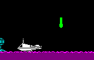
With add-on 8 every other shot is a missile (fire): an ordinary object of type 0, 8 pixels a pass. update_missile looks for a target among the sky records drawn this pass, by type, through missile_target_values, and steers at it hard (+/-$C0 an axis), so it overshoots and comes round. Here a life started where a game starts with add-on 8 fitted by the restart, a pillar staged 72 pixels ahead of the ship and 40 above (see below), and fire pressed once. The pillar (type $18) is one the missile will choose: as the code indexes the table, it rates 6 (see missile_target_values).
Staged: the object was put in a record the way the game puts a thing at the ship (place_at_ship: the record cleared, the ship's place copied in and moved once by the offset), given its kind's four bytes from wave_table as start_attacker copies them and a first wait of 60 passes before it changes course (change_course); the other sky records were freed.
Measured: the missile reached the pillar on pass 26, 1.2 s after it was fired; 43 passes, 2.0 s in the picture.
In the picture: missile, no target; type $18 frame 0 (50 ms), missile, target record 0; type $18 frame 0 (40 ms), missile, target record 0; type $18 frame 1 x3 (130 ms), missile, target record 0; type $18 frame 2 x3 (120 ms), missile, target record 0; type $18 frame 3 x3 (120 ms), missile, target record 0; type $18 frame 0 x3 (150 ms), missile, target record 0; type $18 frame 1 x3 (150 ms), missile, target record 0; type $18 frame 2 x3 (150 ms), missile, target record 0; type $18 frame 3 x3 (150 ms), missile, target record 0; type $18 frame 0 x2 (100 ms), type $15 frame 1 (40 ms), and so on; 43 frames, 2.0 s in all.
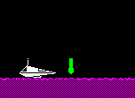
A shot attacker is scored and becomes debris (check_shot): type $15, harmless, its frames cycling every pass, flying the fixed loop of debris_path -- sixteen velocity pairs, out, up, round and down -- in one of its four mirror images, until update_debris reaches the loop's end and frees it. Here the first life, standing where a game starts; a pillar staged 56 pixels ahead of the ship at its height (see below), and fire pressed for a pass.
Staged: the object was put in a record the way the game puts a thing at the ship (place_at_ship: the record cleared, the ship's place copied in and moved once by the offset), given its kind's four bytes from wave_table as start_attacker copies them and a first wait of 60 passes before it changes course (change_course); the other sky records were freed.
Measured: the pillar became debris on pass 4 after the press, and the debris flew for 17 passes before it was freed.
In the picture: type $18 frame 0 x2 (70 ms), type $18 frame 1 (30 ms), type $15 frame 1 (40 ms), type $15 frame 2 (40 ms), type $15 frame 3 (40 ms), type $15 frame 4 (40 ms), type $15 frame 5 (40 ms), type $15 frame 0 (40 ms), type $15 frame 1 (40 ms), type $15 frame 2 (40 ms), type $15 frame 3 (40 ms), and so on; 21 frames, 0.8 s in all.
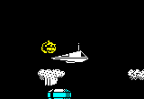
The third hit (or an empty tank) sets death_count to 1; update_objects counts it up a pass. While it is 1 to 3 every sky object is marked exploding and dissolves; at 10 wreck_ship fills all nine records with the wreck -- four debris flying the four mirror images of the debris loop at once, a burst, and five yellow pieces thrown up by wreck_velocities under gravity -- and the death sound plays every pass. From 11 the ship is no longer drawn; at 12 the play loop gives way to the death sequence's. Here the first life, flown left for 40 passes from where a game starts; then the death byte set to 1, as the third hit sets it (contact_damage).
Measured: the death byte went from 2 to 34 over 33 passes, 2.6 s; the wreck appeared 9 passes after the byte was set. The passes from 10 on are longer: the death sound (423,436 T-states at most against 154,377).
In the picture: death byte 2 (70 ms), death byte 3 (70 ms), death byte 4 (80 ms), death byte 5 (70 ms), death byte 6 (60 ms), death byte 7 (80 ms), death byte 8 (80 ms), death byte 9 (70 ms), death byte 10 (100 ms), death byte 11 (120 ms), death byte 12 (100 ms), and so on; 31 frames, 2.6 s in all.
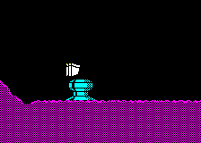
At the end of the death sequence, after the death tune, dissolve_play_area ANDs every byte of the play area sixteen times with the next of the masks at dissolve_masks, the masks running on from byte to byte and line to line, so the picture loses its pixels in a scattered pattern; then the play area is cleared (dissolve_and_clear). It is not a pass: the picture is read at the start and after each sweep, each shown as long as the sweep took, and once more as the life is taken (lose_life). The same run as the wreck.
Measured: each sweep took 317,376 T-states (91 ms); the play area was black after sweep 9 of the sixteen, and the other 7 change nothing.
In the picture: before (90 ms), sweep 1 (90 ms), sweep 2 (90 ms), sweep 3 (90 ms), sweep 4 (90 ms), sweep 5 (90 ms), sweep 6 (90 ms), sweep 7 (90 ms), sweep 8 (90 ms), sweep 9/sweep 10/sweep 11/sweep 12/sweep 13/sweep 14/sweep 15/sweep 16/cleared (770 ms); 10 frames, 1.6 s in all.
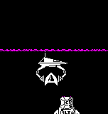
drop_part lets the part the ship carries go when the ship is over the rocket's place (page column $52, pixel $5C, row 10 or above): it becomes a type $1E object (update_rocket_part) falling under a slight acceleration, without testing the landscape, until it reaches its slot -- the rocket's base plus the part's offset from rocket_part_table -- where it is freed, the parts built go up by one and 1500 points are scored. draw_rocket draws the parts already standing. Here the nose cone, part 7, with seven parts built: a life started a little left of and above the rocket's place with the hook fitted and the part carried, right held until it was let go, thrust as needed to hold the height.
Measured: the part was let go on pass 13 and was in its slot 11 passes later, when the parts built went up to 8.
In the picture: part 7 carried x11 (320 ms), part 7 falling x11 (410 ms), 8 parts built x3 (120 ms); 25 frames, 0.8 s in all.
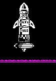
With all eight parts built and the ship in place inside the rocket, draw_rocket sets launch_state, puts the ship away, and from then on moves the rocket's base up each pass by the view's own climb -- move_ship holds thrust on at the fast climb until the view reaches page row 0 -- so the rocket stays put on the screen while the landscape falls away; in page row 0 the base rises 4 lines a pass, and once part 0 has left the screen launch_state becomes $FF and the level ends. Here a life started inside the rocket's place with eight parts built, as the build's launch session stages it; the climb in between is left out of the picture.
Measured: 390 passes from the restart to the rocket's leaving the screen (launch_state $FF); the picture shows the first 30 and the last 40.
In the picture: launch x23 (2020 ms), 320 passes later: launch (80 ms), launch x38 (2360 ms), gone (20 ms); 63 frames, 4.5 s in all.
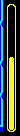
update_fuel_gauge moves the shown level a line a pass towards the fuel's, by XORing two rows -- three pixels at one and the two either side at the next -- so the column keeps a rounded top and is never redrawn whole. flash_fuel_gauge colours it on odd passes: yellow, or red on two passes in four once the fuel's level has reached $98, about seven tenths used. Here a game's first passes, the column climbing to the full tank; then the fuel set to $A800 (102 of the 124 lines burnt) and the column coming down to it.
Measured over 170 passes, 9.3 s: the shown level moved by 1 line a pass, from $75 up to $42 and then down to $A8; red on 57 of the passes.
In the picture: shown $75, yellow (20 ms), shown $74, yellow (30 ms), shown $73, yellow (30 ms), shown $72, yellow (30 ms), shown $71, yellow (30 ms), shown $70, yellow (30 ms), shown $6F, yellow (30 ms), shown $6E, yellow (30 ms), shown $6D, yellow (30 ms), shown $6C, yellow (30 ms), shown $6B, yellow (30 ms), and so on; 160 frames, 9.4 s in all.
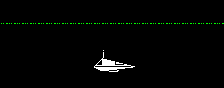
Over every map cell of tile $A6 a one-line beam crosses the cell 9 lines below its top (draw_beams, place_flicker_beam). When the timer in beam_state runs out the game picks, half the time, a pattern from flicker_beam_patterns in a random bright colour for 1-32 passes, and otherwise none for 1-16. The pattern is rotated by the fine scroll, so it stays still on the world. A beam touching the ship damages it. Here a life started in the sky over a row of tile $A6 (map columns $49-$55 of row 7, the view in row 6), held at its height by thrust; the damage was undone each pass.
Measured over 90 passes, 2.6 s: 6 patterns shown, for 20, 2, 14, 20, 16, 5 passes; none shown for 13 passes between.
In the picture: pattern $4D, colour 4 x19 (610 ms), pattern $4D, colour 6 x2 (60 ms), pattern $81, colour 2 x14 (430 ms), pattern $E3, colour 4 x19 (610 ms), pattern $E7, colour 5 x16 (490 ms), none x12 (320 ms), pattern $E7, colour 7 x5 (150 ms); 87 frames, 2.7 s in all.